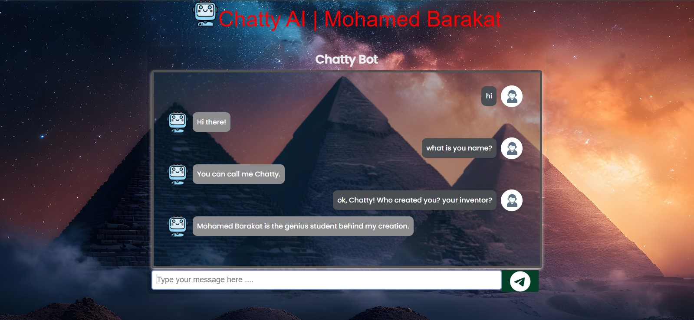

My Artificial Intelligence Projects
Below are the projects I've built by my current experiences. Almost each project section contains a preview image of it, explanation about it, and info about how you can try it on your browser.
Project #01
Smart Chatbot - "Chatty"
"Chatty" is an interactive web-based chatbot application I created using JavaScript, HTML, and CSS. The chatbot is designed to simulate conversation with users and provide responses based on predefined data. The project demonstrates the basics of creating an AI-like interface that interacts with users in real time, enhancing user engagement and providing a simple AI-driven communication experience.
Features:
- Interactive Chat Interface: The chatbot features a user-friendly interface with a text input field and a submit button, allowing users to type their messages and receive responses in real-time.
- Customizable Responses: The chatbot's responses are customizable via a JavaScript file (
script.js) that contains predefined data. This allows for flexible updates and enhancements to the chatbot's conversational abilities. - Responsive Design: The interface is designed using HTML and CSS, ensuring that the chatbot is accessible and visually appealing across various devices and screen sizes.
- Font Awesome Icons: Integrated icons from Font Awesome for a modern and visually appealing UI, enhancing the user's interactive experience.
- Simple AI Simulation: While not powered by advanced AI algorithms, "Chatty" uses conditional logic and pattern matching to simulate a basic conversation, making it an excellent starting point for learning about chatbots.
How It Works:
The chatbot operates through a straightforward JavaScript file that defines how it should respond to user input. When a user types a message in the input field and presses the button, the JavaScript function checks the input against a set of predefined patterns or keywords:
- If the user's message matches a predefined pattern, "Chatty" provides a relevant response.
- If no match is found, "Chatty" responds with a default message or prompts the user for more information.
- The conversation is displayed in a chat window, where user inputs and bot responses appear sequentially.
Usage:
"Chatty" can be embedded in any website to provide a basic interactive experience for users. It's perfect for simple FAQs, introductory conversations, or educational purposes where users can learn about basic programming logic and web development concepts.
Live Demo Source Code Project #02
AI Face Detection and Blurring Application
This project is a Python-based application that utilizes OpenCV and the cvzone library to detect faces in a video feed and apply a blur effect to them. The application captures video in real-time from a webcam or processes a pre-recorded video file, detects faces using an AI-based model, and dynamically blurs each detected face for privacy protection.
Features:
- Real-Time Face Detection: The application uses the
FaceDetectorclass from thecvzonelibrary to detect faces in each frame of the video feed in real time. - Face Blurring: Once a face is detected, the application applies a blur effect to the region of the face. The blurring area is dynamically adjusted to cover the entire face, providing effective privacy protection.
- Video Processing: The application supports both real-time video capture from a webcam and processing of pre-recorded video files. It can write the processed video with blurred faces to a new video file (
output.mp4). - Customizable Blurring Effect: The blurring effect is customizable, allowing adjustments to the intensity and area of the blur applied to detected faces.
- User-Friendly Interface: The application displays the processed video feed in a window, allowing users to monitor the blurring in real time. Users can exit the application by pressing the 'q' key.
How It Works:
The script starts by initializing the video capture object to capture frames from the webcam or a specified video file. It then creates an instance of the FaceDetector class to handle face detection.
- For each frame captured:
- The
findFaces()method detects faces and returns their coordinates. - For each detected face, the coordinates are adjusted to cover a larger area (forehead to chin) and blurred using the
cv2.blur()function. - The blurred face region replaces the original face region in the video frame.
- The
- The processed frame is then written to an output video file and displayed to the user in a window.
- The loop continues until the user presses the 'q' key to exit.
Usage:
This application is ideal for ensuring privacy in video recordings, such as surveillance footage or personal videos. To use the application, run the script in a Python environment with OpenCV and cvzone installed. You can choose to capture video from your webcam or specify a path to a video file. The application will process the video and output a new video file with blurred faces.
Source Code
My Game Projects
Below are the projects I've built by my current experiences. Each Game project section contains a preview image of it, explanation about it, and info about how you can play it on your browser.
Project #03
Ping Pong Game - User vs. AI
This project is a web-based Ping Pong game where a user can play against an AI-controlled paddle. The game is built using HTML5, CSS, and JavaScript, and it features a fully functional game loop, smooth animations, and simple controls for an engaging gaming experience.
Features:
- User vs. AI Gameplay: The game pits a human player against a computer-controlled paddle. The AI is programmed to track the ball's movement and adjust its position accordingly, providing a challenging opponent for the player.
- Smooth Animations: Utilizes the HTML5
<canvas>element to render game graphics and animations, creating a visually appealing and smooth gameplay experience. - Responsive Design: The game layout is designed to adjust dynamically based on the player's device, ensuring a consistent experience whether on a desktop or mobile device.
- Intuitive Controls: The user can control their paddle using the up and down arrow keys, making it easy for players to pick up and play.
- Background and Aesthetics: The game features a custom background image and simple, clean design elements to enhance the visual appeal.
How It Works:
The game is initiated in the browser, displaying a playing field with two paddles and a ball. The player controls the left paddle using the arrow keys, while the AI controls the right paddle. The goal is to score points by making the ball pass the opponent's paddle. The AI uses a basic algorithm to predict the ball's trajectory and adjust its position for defense.
Technologies Used:
- HTML5 and Canvas: Used for rendering the game elements and handling the animations.
- CSS: Provides the styling for the game interface, including layout, fonts, and background.
- JavaScript: Handles the game logic, including user input, AI behavior, collision detection, and scorekeeping.
Controls:
- Player Controls: Use the 'Up' arrow key to move the paddle up and the 'Down' arrow key to move it down.

Project #04
Snake Game - JavaScript
This project is a classic Snake game developed using JavaScript, HTML, and CSS. The objective is to control a snake to eat the food appearing on the board while avoiding collisions with the walls or the snake's own body. As the snake eats the food, it grows in length, making the game progressively more challenging.
Features:
- Dynamic Gameplay: The game dynamically increases the difficulty as the snake grows longer with each piece of food consumed.
- Score Tracking: Displays the current score and high score, allowing players to track their progress over multiple sessions.
- Responsive Controls: Intuitive keyboard controls (Arrow keys) for moving the snake in different directions.
- Visual Feedback: The game provides visual feedback for the player's current and high score, enhancing the gaming experience.
How It Works:
The game initializes with a small snake and a piece of food randomly placed on the board. The player controls the snake using the arrow keys to navigate towards the food. Each time the snake eats the food, it grows longer, and a new piece of food appears. The game continues until the snake collides with itself or the wall.
Technologies Used:
- HTML and CSS: Used for the game's structure and styling, providing a clean and responsive user interface.
- JavaScript: Implements the game logic, including movement, collision detection, and scorekeeping.
- Font Awesome: Utilized for arrow icons to represent directional controls visually on the interface.
Controls:
- Arrow Keys: Use the 'Left', 'Up', 'Right', and 'Down' arrow keys to control the snake's movement.

Project #05
Tic-Tac-Toe Game
This project is a classic Tic-Tac-Toe game developed using HTML, CSS, and JavaScript. The game allows two players to take turns marking their symbols (X or O) on a 3x3 grid, aiming to align three of their marks horizontally, vertically, or diagonally.
Features:
- Interactive Gameplay: Players click on grid cells to place their mark, and the game dynamically updates to show the current turn and results.
- Winning Detection: The game automatically detects winning combinations and displays the winner or if the game is a draw.
- Play Again Option: After the game ends, players have the option to reset the board and start a new game.
- Simple UI: A minimalistic user interface for easy and intuitive gameplay.
How It Works:
The game initializes with an empty 3x3 grid and indicates the first player's turn. Players click on the cells to place their marks. The game checks for winning combinations after each turn and displays the winner or a draw message. Players can click the "Play Again" button to reset the board and start a new game.
Technologies Used:
- HTML and CSS: Used to structure and style the game board and layout.
- JavaScript: Implements the game logic, turn management, and winning condition checks.

Project #06
Jets War Game
This project is an exciting Jets War Game developed using JavaScript and HTML5 Canvas. Players control a jet that moves across the screen, dodging enemies and collecting health kits to stay alive while aiming for a high score.
Features:
- Interactive Gameplay: Control the jet using mouse movements or touch, and shoot bullets to destroy incoming enemies.
- Score and Health Tracking: The game keeps track of the player's score and health, displaying them on the screen.
- Health Kits: Players can collect health kits to restore health points.
- Dynamic Enemy Generation: Enemies appear at random intervals, adding to the game's difficulty and excitement.
- Simple UI: A clean and simple user interface for easy and intuitive gameplay.
How It Works:
The game initializes with a player-controlled jet at the bottom of the screen. Enemies spawn from the top and move downwards. Players aim to avoid enemies while shooting them down. Collecting health kits increases the player's health, and missing an enemy decreases it. The game ends when the player's health reaches zero.
Technologies Used:
- HTML and CSS: Used to structure and style the game canvas and layout.
- JavaScript: Implements the game logic, player controls, enemy movement, collision detection, and score/health management.
- HTML5 Canvas: Renders the game graphics and animations.

My Desktop Apps Projects
Below are the projects I've built based on my current experience. Each project section contains a preview image, an explanation, and information on how you can try it on your browser.
Project #07
Weather Application
This Weather Application provides real-time weather information, including temperature, humidity, and wind speed, for any location entered by the user. The app features a clean and intuitive design, making it easy for users to get accurate weather updates quickly.
Features:
- Real-Time Weather Data: Get current weather details for any city or location.
- User-Friendly Interface: Simple and easy-to-navigate UI for a smooth user experience.
- Search Functionality: Users can search for any location to get the latest weather updates.
- Weather Details: Displays temperature, humidity, wind speed, and weather conditions like clear sky, clouds, rain, etc.
How It Works:
The application allows users to enter a location in the search box. Upon submission, it fetches the weather data for that location and displays it on the screen. The app uses a weather API to get real-time weather information.
Technologies Used:
- HTML and CSS: Used for structuring the layout and styling the application.
- JavaScript: Implements the logic for fetching and displaying weather data.
- Weather API: Fetches real-time weather data based on the user's input location.
- Boxicons: Provides icons for the search button and weather conditions.

Project #08
IDE Application - PyCodeLite
This is a web-based Integrated Development Environment (IDE) application I created that allows users to write and run HTML, CSS, and JavaScript code in real time. The application provides a split view with an editor panel for writing code and a live output panel to see the results immediately.
Features:
- Real-Time Code Execution: Write HTML, CSS, and JavaScript code and see the output instantly.
- Simple User Interface: A clean and intuitive design makes it easy for users to write and test their code.
- Responsive Design: Works well on both desktop and mobile devices.
- Syntax Highlighting: Uses Font Awesome icons for HTML, CSS, and JavaScript to enhance user experience.
How It Works:
The application features three text areas, each dedicated to HTML, CSS, and JavaScript. When the user types in any of these text areas, the content is dynamically injected into an iframe to display the output. This setup allows for immediate feedback and a seamless coding experience.
Technologies Used:
- HTML and CSS: Used to create the structure and style of the IDE application.
- JavaScript: Provides the logic to update the output in real time as the user types.
- Font Awesome: Icons are used for better visual representation and user experience.

Project #09
PDF Reader Application
This is a PDF Reader application I created using Python and Tkinter. The application allows users to open and view PDF files within a custom GUI. The viewer is built using the Tkinter library and a third-party module, `tkPDFViewer2`, which provides the functionality to render PDF documents.
Features:
- File Browser: Allows users to select a PDF file from their system using a file dialog.
- PDF Viewing: Opens and displays the selected PDF file within the application window.
- Customizable UI: The window's background color and button styles can be easily modified.
How It Works:
The application uses a button to trigger a file dialog for selecting PDF files. Once a file is selected, it is opened and displayed in a Tkinter frame using the `tkPDFViewer2` library. The application is built to handle basic functionalities such as opening and viewing PDF documents.
Technologies Used:
- Python: The core language used for building the application logic.
- Tkinter: Used for creating the GUI components and handling user interactions.
- tkPDFViewer2: A third-party library that renders PDF documents within the Tkinter interface.

My Cybersecurity Projects
Below are the projects I've built by my current experiences. Each project section contains a preview image of it, explanation about it, and info about its usage, but unfortunately, you are NOT able to try it on your browser. You should download the source code and run it locally.
Project #10
Phone Number Information Extractor
This project is a Python-based script that extracts and displays detailed information about phone numbers. Utilizing the phonenumbers library, the script takes a phone number input from the user and provides various details such as the country code, national number, geographic location, carrier name, and timezone associated with the number.
Features:
- Country Code and National Number Extraction: The script identifies and displays the country code and the national phone number format from the user's input.
- Geographic Information: It determines the geographic location (region and country) of the phone number using the
geocodermodule from thephonenumberslibrary. - Carrier Information: The script provides the name of the carrier or service provider associated with the phone number using the
carriermodule. - Timezone Detection: It detects and displays the timezone(s) in which the phone number is registered using the
timezonemodule. - Error Handling: The script includes error handling to ensure that the entered number is valid. If the phone number format is incorrect or the number is invalid, it prompts the user to enter a real phone number.
How It Works:
The script starts by importing necessary modules from the phonenumbers library. The user is prompted to enter a phone number with its country code. The script then attempts to parse the entered number using the phonenumbers.parse() method.
- If the number is valid, the script extracts and displays the following information:
- Country Code and National Number
- Geographic Location (City and Country)
- Carrier Name
- Timezone(s) of the Phone Number
- If the entered number is invalid, the script displays an error message and terminates.
Usage:
This tool is useful for verifying phone numbers and obtaining information about them for various purposes, such as cybersecurity checks, data validation, and telecommunication analysis. To use the script, run it in a Python environment and input a phone number when prompted.
Source Code
Project #11
Password Manager
The Password Manager project is a Python-based application designed to help users generate, store, retrieve, update, and delete strong passwords securely. It features a simple command-line interface with multiple options to manage passwords efficiently. The project uses separate modules for password generation (passwords_generator) and database management (database), ensuring that passwords are securely generated and stored.
Features:
- Generate a New Password: Enables you to generate a strong password using the
passwords_generatormodule. - Store a Password: Allows the user to store a generated password securely in a database.
- Retrieve Passwords: Provides functionality to retrieve all stored passwords from the database.
- Update a Password: (Future Enhancement) Will allow the user to update an existing password.
- Delete a Password: Enables the user to delete a password from the database.
- Exit: Safely exits the application, ensuring all changes are saved.
Usage:
To use the Password Manager application, follow these steps:
- Clone the repository from GitHub: By clicking on the "Source Code" button Below
- Navigate to the project directory:
cd Password-Manager - Ensure you have Python installed on your machine. If not, download it from the official Python website.
- Run the
main.pyfile using the command:python main.py - Follow the on-screen instructions to generate, store, retrieve, update, or delete passwords as needed.
- Choose the 'Exit' option to safely close the application and save your changes.

Project #12
Network Packet Sniffer and Port Scan Detector
This project is a Python-based network packet sniffer and port scan detector designed to monitor and analyze network traffic on a local network. Using the scapy library, the script captures network packets in real-time, identifies potential port scans, and tracks devices connected to the local network.
Features:
- Real-Time Packet Sniffing: The script uses the
scapylibrary to sniff network traffic in real time, capturing all IP packets on the network. - Port Scan Detection: By analyzing incoming packets, the script can detect potential port scans targeting devices on the local network. Port scans are often used by attackers to find open ports on a device, which can then be exploited.
- Device Tracking: The script keeps track of unique IP addresses of devices connected to the local network. It identifies devices with IP addresses starting with "192.168.", which is a common range for private local networks.
- Logging and Monitoring: Each packet detected is logged with a timestamp, source IP address, destination port, and the number of devices connected to the network. This information is printed to the console and optionally saved to a log file (
network_log.txt) for further analysis.
How It Works:
The script initializes by importing necessary modules from scapy and setting up a counter for the number of packets and a set to store unique local IP addresses. The core functionality is handled by the detect_port_scan function, which is called for each packet captured by the sniff function.
- For each packet, the function checks if it has an IP layer and retrieves the source IP address and destination port.
- If the source IP is within the local network range (
192.168.x.x), it is added to theconnected_devicesset to track unique devices. - The packet details, along with the timestamp and the count of connected devices, are logged to the console and saved to a log file.
- The
snifffunction continuously monitors the network interface for IP packets and passes them to thedetect_port_scanfunction.
Usage:
To use this network sniffer and port scan detector, run the script with appropriate permissions to access network interfaces. It is suitable for network administrators and cybersecurity enthusiasts to monitor network activity and detect potential threats in a local network environment.
Source Code
My Mobile Apps Projects
Below are the projects I've built based on my current experiences. Each project section contains a preview image, an explanation about it, and information on how you can try it in your browser.
Project #13
Calculator Application
This is a mobile-friendly Calculator application built using HTML, CSS, and JavaScript. The calculator performs basic arithmetic operations and includes advanced functionality such as square root, power, and parentheses for more complex calculations.
Features:
- Basic Arithmetic: Supports addition, subtraction, multiplication, and division.
- Advanced Functions: Includes square root, exponentiation, and percentage calculations.
- Clear and Delete: Allows users to clear all input or delete the last entered character.
- Responsive Design: Designed to work seamlessly on mobile devices.
How It Works:
The application features a clean and simple user interface with buttons representing digits, operators, and functions. Users can input expressions directly using the buttons, and the results are computed in real time when the "=" button is pressed. The screen at the top displays the current input and results.
Technologies Used:
- HTML: Used for structuring the application layout.
- CSS: Provides styling for the calculator to enhance its visual appeal and usability.
- JavaScript: Handles the logic for all calculator operations and updates the display dynamically.

Project #14
To-Do List Application
This is a To-Do List application I created using HTML, CSS, and JavaScript. The application allows users to add, delete, and mark tasks as completed, helping them manage their daily tasks efficiently. The app's responsive design ensures usability across all devices, from desktops to mobile phones.
Features:
- Add Tasks: Users can add new tasks to the list by entering text and pressing the "Add" button or hitting enter.
- Mark Tasks as Completed: Tasks can be marked as completed by clicking the checkbox next to each task.
- Delete Tasks: Users can remove tasks from the list by clicking the delete button.
- Responsive Design: The app is designed to work seamlessly on both desktop and mobile devices.
How It Works:
The To-Do List application provides a simple interface for task management. Users can enter tasks in the input field and either click the "Add" button or press enter to add them to the list. Each task can be marked as completed by checking the corresponding checkbox, and unwanted tasks can be removed using the delete button. The interface dynamically updates to reflect the current state of the task list.
Technologies Used:
- HTML: Provides the basic structure of the application.
- CSS: Used to style the application for a clean, modern look.
- JavaScript: Implements the functionality for adding, removing, and marking tasks as completed.